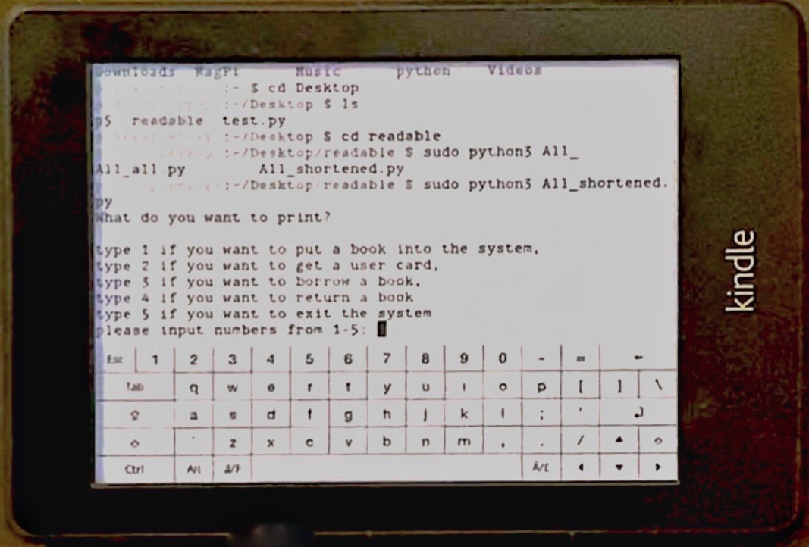
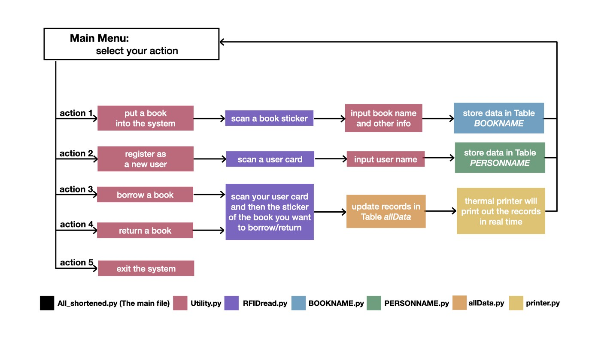
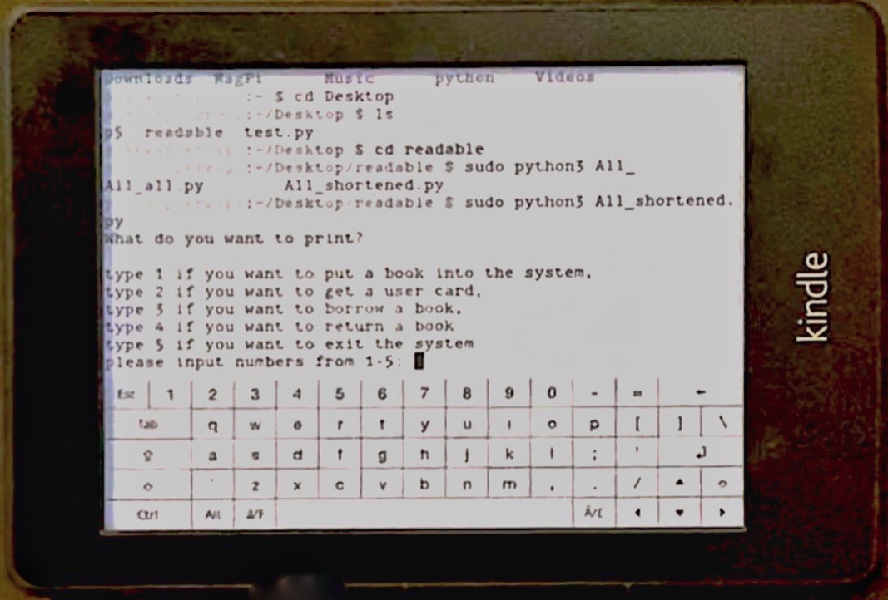
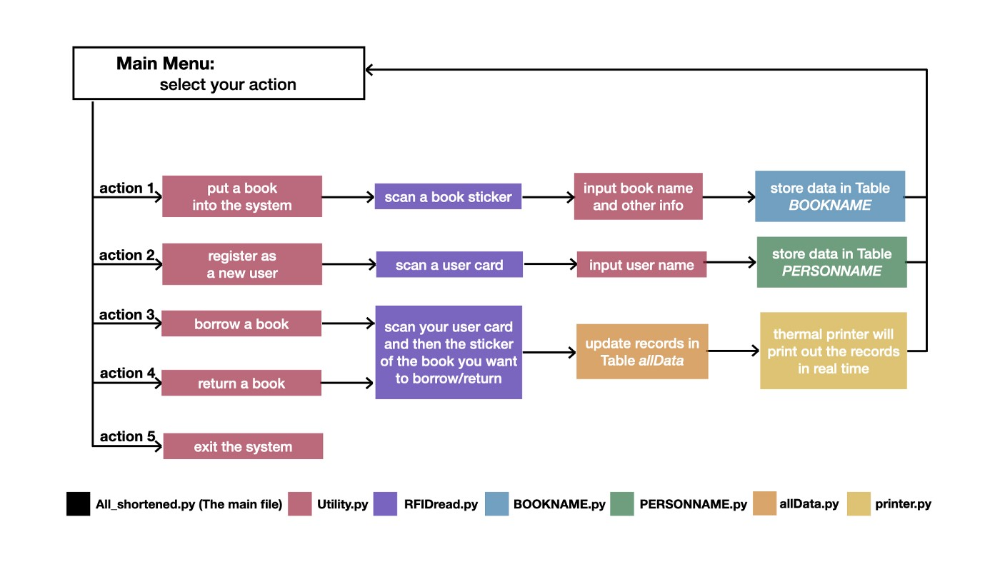

Readable Project
A low-cost replicable RFID-based library system using Raspberry Pi
Arduino, keyboard, RFID-sensor, Kindle
We are invited to make a library system for an independent research studio, in the purpose of creating an open reading space and good reading atmosphere. In this system, we used hardwares including Raspberry Pi, Kindle, VeriNanoC (an Arduino compatible board), RFID reading module RC522 and a thermal printer.
Check more info in my Medium story: https://medium.com/@maggie_mayu/reada...